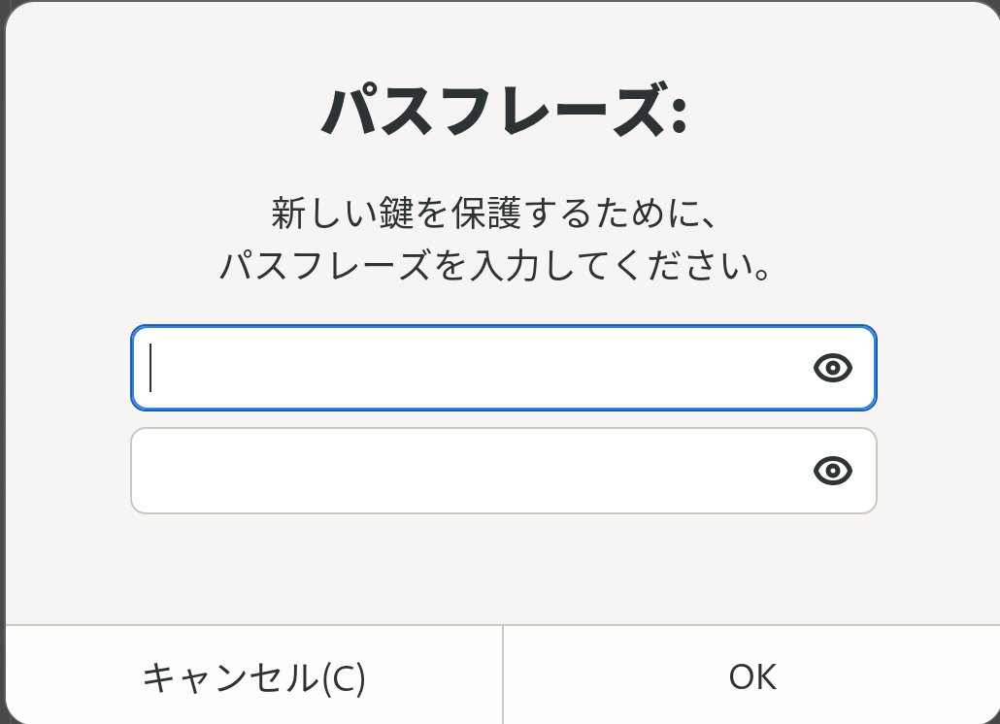
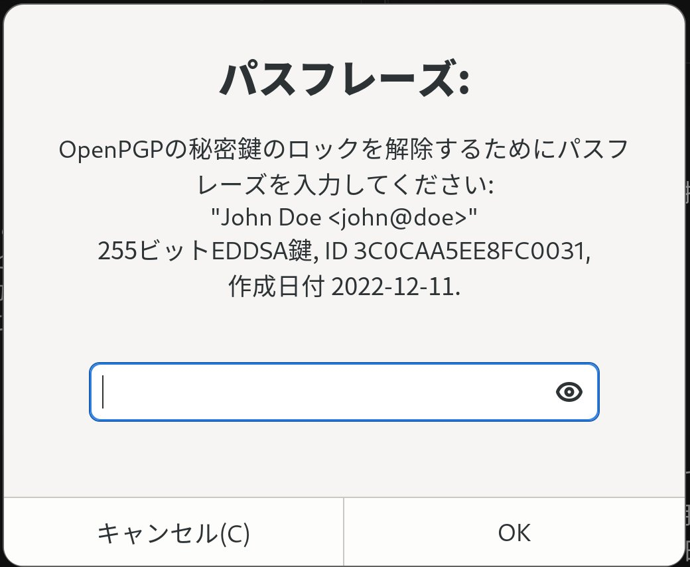

GnuPGを運用する（準備編）
GnuPGとは
GnuPGを使うと、通信の秘密を守ることができます。そのために公開鍵暗号方式が採用されています。
データの暗号化や署名の用途に使うことが多いです。
詳しいことを抜きに話すと、一対の公開鍵と秘密鍵のペアを用意して、あらゆる相手先に同じ公開鍵を渡すので、相手側で公開鍵が漏洩してもそもそも公開されているので安全という事です。自分の持つ一つの秘密鍵は自分できちんと管理していれば安全です。 普通のパスワードの場合、どこからか漏洩したらすべての同じパスワードが危険になります。
この説明はgpgを使うのに大変苦労したので、GnuPGを使うために必要な知識と実際の使い方と雰囲気のメモと概説になります。
MIRACLE LINUX 9 での使い方
MIRACLE LINUX 9では、2022/12時点でGnuPGのバージョン 2.3.3が使われているようです。通常の使い方であれば問題ありません。 GnuPGを他のプログラムと連携を行う場合、別の設定やソフトウェアのインストールが必要になることがあります。（例えばSSH鍵として使ったり、OpenPGP card互換の機能を使うなど。）
GnuPGを使う前に
GnuPGのリリースは20年以上前になります。その為、現代(2022年)ではソフトウェアそのものの操作はもとより、仕組みから何からとても複雑に感じてしまいます。そういうプログラムであるという事を前提に取り組むと良いと思います。
公開鍵暗号
公開鍵暗号方式には、公開鍵と秘密鍵がペアで存在し、公開鍵はその名の通り公開する鍵（秘密にする必要がない）で、秘密鍵はその名の通り秘密にする鍵（他人に知られてはならない）です。
公開鍵暗号に対して、一般的に暗号化で思いつくのは共通鍵暗号です。これは一般的にパスワードとして使っているものです。一つのパスワードで暗号化と復号化を行います。
暗号化通信を行う場合に、公開鍵暗号では必要な鍵の数がn×2個なのに対して、共通鍵暗号では1/2×n×(n-1)個必要になります。つまり通信相手が多くなってくると、公開鍵暗号の方が鍵の数が少なくて鍵を管理する手間も少ないということになります。感覚的にも、公開鍵暗号は自分が鍵ペアを一つ持っていればいいことに対して、共通鍵暗号では通信相手毎にたくさんの鍵が必要だなということで分かるかと思います。
そして公開鍵暗号の用途は大きく次の3種類にわかれます。
暗号化用途
相手に暗号化したデータを送るために、相手の公開鍵を探してきて取得し、公開鍵でデータを暗号化します。この暗号化データは相手が持っている秘密鍵でのみ復号化できるので、インターネット経由で暗号化データを送っても安全です。
署名用途
自分が作成したデータですよと証明するためには、そのデータに対して自分の秘密鍵を用いて署名を行います。署名されたデータを公開した時に、相手はそのデータに署名がされているかを公開鍵を用いて確認することができます。データが改竄されていたりすると、署名の検証に失敗するので違うデータということがわかります。
どちらのパターンでも大事なのは、秘密鍵は自分だけが持っていることと公開鍵は公開していること。公開鍵については誰かが勝手になりすまして公開されないように、はっきりと自分だと言えることが大事になります。
鍵配送用途
これはGnuPGでは使わないと思いますが、公開鍵暗号の用途としては存在します。実は公開鍵暗号はその暗号化と復号化に必要な処理が、共通鍵暗号より多いのです。そのため、一つのデータと暗号化したり署名して送る用途にはいいのですが、ストリームデータの暗号化（映像配信など）を行う時にはちょっと不向きです。その為、最初だけ公開鍵暗号を使って、共通鍵を暗号化して相手に送ります。その後はその共通鍵を使って暗号通信を行うと効率的な暗号通信が可能です。GnuPGにはあまり関係しないので多くは書きません。
公開鍵と秘密鍵の関係
公開鍵暗号では公開鍵と秘密鍵のペアという説明を何度もしましたが、これは公開鍵を持っていても、秘密鍵を知ることはできないという特性があるためです。逆に、秘密鍵を知っていると公開鍵を知ることができます。
RSA暗号を例にすると、秘密鍵の中には素数pとqがあります。適当に選んだ素数pとqをかけた値をnとします。(p-1)(q-1)と互いに素な数から適当に一つ数を選び、eとします。そしてe*d ≡ 1 mod φ(n)(φ()はトーシェント関数)が成り立つようにdを計算します。このdも秘密鍵の中に入れておきます。公開鍵には、eとnを入れておきましょう。1
公開鍵の中身→ eとn
秘密鍵の中身→ pとqとd
暗号化は、欲しい暗号文をc(ciphertext)として元の平文をm(message)とすると、c = m^e mod n、復号化はm = c^d mod nとなります。
公開鍵にはeとnがあるので、暗号化したいデータつまりmを用意すればc = m^e mod nを計算できます。逆に、公開鍵で復号化しようとしても、dがわかりません。dを計算するためには、適当に選ばれたeを探す為にnを素因数分解してpとqを求めなければなりません。そのpとqがとても大きい数の場合、現実的な時間でpとqを求めることができません。現実的な時間で求めることができない場合、その鍵は安全ということになります。なので、コンピュータの性能が上がると必要なpとqの大きさも増えていくことになります。
秘密鍵にはpとqとdがあり、復号化はm = c^d mod nなので、暗号文cがあればmを求めることができます。さらに、公開鍵のeは最初の計算通りe*d ≡ 1 mod φ(n)を満たすようなdを探すと求めることができます。nは単純にpとqを掛けると求めることができます。
これが、公開鍵から秘密鍵を計算することはできないが、秘密鍵から公開鍵を計算することができるという仕組みです。
楕円曲線暗号は分からないので誰か教えてください。
GnuPGのデータ構造
公開鍵データ
gpgで生成される公開鍵には単純な公開鍵以外に、鍵の所有者や有効期限等のデータが一緒になっています。その為、有効期限を更新したり自分の名前やメールアドレスが変更になった場合は公開鍵を更新してみんなにお知らせする必要があるようです。ここに関しては詳しくないのであまり分かりません。
たくさんの鍵
使用していくと、鍵一覧にどんどん他の人の公開鍵が増えます。gpgでは特に自分の鍵と他人の鍵という区別はなさそうで、公開鍵があるか・秘密鍵があるかぐらいのようです。自分の鍵がどれなのか、きちんと後述するkeyidやfingerprintを別途テキストに記録しておくと便利かもしれません。
鍵の機能
鍵には署名・暗号化等複数の機能を持たせることがあり、それぞれ別の機能をもった鍵として作ることもできます。
プログラム上でそれぞれ略称でS、C、E、Aと表示されます。
| 略称 | 名称 | 用途 |
|---|---|---|
| S | Signing | 署名(ファイル等へ署名する) |
| C | Certification | 証明(副鍵を使うときに、主鍵に紐付いてることになる) |
| E | Encryption | 暗号化(ファイル等を暗号化する) |
| A | Authentication | 認証(SSH接続やPAM認証等) |
主鍵と副鍵
公開鍵と秘密鍵がセットで一つの鍵として考えた場合に、主となる鍵と、そこに紐付く複数の副鍵が存在します。
GnuPGでデフォルト設定のまま鍵を生成すると、まずは主鍵が作られてSとCの機能が付与され、自動的に副鍵にEの機能が付与された状態になります。
鍵データの場所
通常、鍵データ等は$HOME/.gnupg/以下に保存されています。セキュリティを保つために、ディレクトリのパーミッションは700になります。
また、鍵データがファイルで存在していることになりますが、ディレクトリを開いてファイル移動でコピーしたりバックアップしたりということはあまり想定されていないようです。直接ファイルを触ることはせずgpgコマンドを使って操作することが前提になります。
環境変数のGNUPGHOMEにパスを設定すると、そのパスが鍵データ等のディレクトリとしてgpgコマンドが実行されます。一時的に鍵を生成したり、インポート・エクスポート等を行う場合に重宝します。export GNUPGHOME="$(mktemp -d)"で環境変数を設定すると、以後のgpgコマンドは環境変数に指定したディレクトリのデータを基に動作するので、$HOME/.gnupg/以下に影響を与えることがありません。一通り作業が終わったら、export -n GNUPGHOMEで環境変数を削除すると、以後gpgコマンドは$HOME/.gnupg/以下のデータを読み込むようになり、元に戻ります。なお、gpg-agentプロセスが立ち上がるので、ps x | grep gpg-agentを実行して表示された中で、--homedir以下が/tmp/tmp.****となっているもののプロセスを終了させましょう。左端の数値を覚えて、kill xxxx(xxxxに数値を入れる)で終了することができます。
一時的なフォルダを作って作業を行う場合
$ export GNUPGHOME="$(mktemp -d)"
$ gpg --import hogehoge.key
...いろいろな作業
$ export -n GNUPGHOME
このような感じで作業します。mktemp -dで/tmp以下に一時的なフォルダを作って作業を行う方法は、公式の説明の中にあった方法です。
この手法はエクスポートしたデータをきちんとインポートできるかのテストや、他にも役立つので重宝します。
GnuPGを使う
概要
GnuPGはgpgという実行ファイルになっています。--versionオプションをつけるとインストールされているgpgのバージョンを確認できます。
再度になりますが、2022年12月時点のMIRACLE LINUX 9ではバージョンが2.3.3になっています。
$ gpg --version
gpg (GnuPG) 2.3.3
libgcrypt 1.10.0-unknown
Copyright (C) 2021 Free Software Foundation, Inc.
License GNU GPL-3.0-or-later <https://gnu.org/licenses/gpl.html>
This is free software: you are free to change and redistribute it.
There is NO WARRANTY, to the extent permitted by law.
Home: /home/john/.gnupg
サポートしているアルゴリズム:
公開鍵: RSA, ELG, DSA, ECDH, ECDSA, EDDSA
暗号方式: IDEA, 3DES, CAST5, BLOWFISH, AES, AES192, AES256,
TWOFISH, CAMELLIA128, CAMELLIA192, CAMELLIA256
AEAD: EAX, OCB
ハッシュ: SHA1, RIPEMD160, SHA256, SHA384, SHA512, SHA224
圧縮: 無圧縮, ZIP, ZLIB, BZIP2
もしgpgコマンドが見つからなかった場合は、GnuPGをインストールしてください。ついでにpinenry(PINをコンソールや画面から入力できる)もインストールすると良いでしょう。
$ sudo dnf install gnupg pinentry
心構え
gpgコマンドを使う時の個人的な印象と注意点ですが、とにかくオプションが多くなっていて覚えづらいことと、コマンドごとに動作の一貫性がないことがあります。またバージョンによって必要なオプションが違ったり、オプションの短縮形が存在したりしています。
他にもたくさん細かい注意点や補足があるので、都度書いておきます。
オプションをつけよう
gpgコマンドをオプション無しで起動すると
gpg: *警告*: コマンドが指定されていません。なにを意味しているのか当ててみます ...
gpg: 開始します。メッセージを打ってください ...
と表示されますが、当ててくれたことがないのでCtrl-Cで終了する方が幸せになれると思います。
基本的にすべての操作はオプションをつけるとやりやすいと思います。
オプションの指定
オプションは、途中まで打って他とかぶらなければそのまま認識されるようです。
例 : --list-ke → --list-keys以外にないので--list-keysとして認識される。
鍵の区別
gpgでは鍵を個別に指定するのに複数の種類があるようです。
鍵IDとなるkeyidにshortとlong、そして鍵の指紋であるfingerprintがあります。オプションではほとんどkeyidを指定しますが、時々fingerprintが必要なことがあります。keyidのshortとlongは、重複しなければshortでよいみたいです。またkeyidといいながらユーザの氏名やメールアドレスを指定しても部分一致で表示してくれるみたいです。
keyidをテキストに保存しておいて、毎回cat my_keyid.txtで読み込むという方法もいいかもしれません。
目的別操作方法
逆引きリファレンスみたいに使い方をメモしておきます。
最初の鍵ペア(主鍵)作成
早速鍵の生成に入りたいところですが、まずどんな種類の鍵を作るか考える必要があります。
通常、鍵ペアを作成するためのコマンドとしてはgpg --gen-key(gpg --generate-keyの略)があります。このコマンドを実行し、本名とメールアドレス、そして秘密鍵を守る為のパスワードを入力すると鍵ペアが作成されます。この方法で作成しても問題はありません。この場合はRSAの3072bitで生成されるみたいです。
この場合、鍵ペアが二つ作られます。
ここではgpg --full-gen-key --expert(gpg --full-generate-keyの略と--expertモード)を使って暗号の種類をECCにして生成してみたいと思います。
--expertをつけると、RSAとDSA以外を選ぶことができます。
$ gpg --full-gen-key --expert
gpg (GnuPG) 2.3.3; Copyright (C) 2021 Free Software Foundation, Inc.
This is free software: you are free to change and redistribute it.
There is NO WARRANTY, to the extent permitted by law.
ご希望の鍵の種類を選択してください:
(1) RSA and RSA (default)
(2) DSA and Elgamal
(3) DSA (sign only)
(4) RSA (sign only)
(7) DSA (set your own capabilities)
(8) RSA (set your own capabilities)
(9) ECC and ECC
(10) ECC (署名のみ)
(11) ECC (set your own capabilities)
(13) Existing key
(14) Existing key from card
あなたの選択は?
11を入力します。
あなたの選択は? 11
このECC鍵にありうる操作: Sign Certify Authenticate
現在の認められた操作: Sign Certify
(S) 署名機能を反転する
(A) 認証機能を反転する
(Q) 完了
ここで生成する主鍵はCertificatio機能のみにして、Signは副鍵で作ることにしましょう。その為、現在認められた操作にSignが存在するのでSを入力します。ちなみにSを入力する度に消えたり付与したりを繰り返します。
あなたの選択は? s
このECC鍵にありうる操作: Sign Certify Authenticate
現在の認められた操作: Certify
(S) 署名機能を反転する
(A) 認証機能を反転する
(Q) 完了
現在の認められた操作からSignが消えました。qを入力して完了します。
ご希望の楕円曲線を選択してください:
(1) Curve 25519
(2) Curve 448
(3) NIST P-256
(4) NIST P-384
(5) NIST P-521
(9) secp256k1
希望の楕円曲線を選べることになります。Githubにソースコードをあげるときの署名のことを考えると、Curve 448は対応していないので1のCurve 25519を選びます。
あなたの選択は? 1
鍵の有効期限を指定してください。
0 = 鍵は無期限
<n> = 鍵は n 日間で期限切れ
<n>w = 鍵は n 週間で期限切れ
<n>m = 鍵は n か月間で期限切れ
<n>y = 鍵は n 年間で期限切れ
鍵の有効期間は? (0)
主鍵は0の無期限でよいと思います。漏れたらおしまいなのでそうなんども期限更新する手間とかいろいろ考えると無期限の方が安心できる気がします。
鍵の有効期間は? (0)
鍵は無期限です
これで正しいですか? (y/N)
正しいのでyを入力します。
これで正しいですか? (y/N) y
GnuPGはあなたの鍵を識別するためにユーザIDを構成する必要があります。
本名:
本名を入力しましょう。ユニーク名で活動するならその名前でもいいかもしれません。この例ではJohn Doeさんにしています。
本名: John Doe
電子メール・アドレス:
メールアドレスも入力します。この例では正しいメールアドレスではない、john@doeとしています。
電子メール・アドレス: john@doe
コメント:
コメントは何も入力せずそのままEnterキーを押します。何か入力してもよいです。
名前(N)、コメント(C)、電子メール(E)の変更、またはOK(O)か終了(Q)?
OKなのでoを入力します。

パスワード入力画面が表示されます。秘密鍵はそのまま秘密鍵として使えるとあまりにも危険なので、パスワードで保護するようになっています。その為、適度なパスワードを設定しましょう。打ち間違い防止のため同じパスワードを上下に入力する必要があります。
次のユーザIDを選択しました:
"John Doe <john@doe>"
名前(N)、コメント(C)、電子メール(E)の変更、またはOK(O)か終了(Q)? o
たくさんのランダム・バイトの生成が必要です。キーボードを打つ、マウスを動か
す、ディスクにアクセスするなどの他の操作を素数生成の間に行うことで、乱数生
成器に十分なエントロピーを供給する機会を与えることができます。
gpg: 鍵3C0CAA5EE8FC0031を究極的に信用するよう記録しました
gpg: 失効証明書を '/home/john/.gnupg/openpgp-revocs.d/28A2FB1E3A9A6DAC90ACD7943C0CAA5EE8FC0031.rev' に保管しました。
公開鍵と秘密鍵を作成し、署名しました。
pub ed25519 2022-12-11 [C]
28A2FB1E3A9A6DAC90ACD7943C0CAA5EE8FC0031
uid John Doe <john@doe>
$
これで一つの鍵ペア(主鍵)を作成することができました。失効証明書というのは、もし秘密鍵が漏洩したり、秘密鍵をなくしてしまったり、とにかく秘密鍵をもうこれからは使いませんというのを表明する為のファイルです。秘密鍵が無くなってからは作ることができないのと、失効証明書自体は単体で使えるので、このファイルも盗まれると困ることになります。USBメモリなどにコピーして大事にしまっておきましょう。
さて、きちんと鍵が生成されたか確認してみましょう。gpg --list-keysコマンドが鍵の一覧表示です。gpg -kがその短縮形になります。
$ gpg -k
gpg: 信用データベースの検査
gpg: marginals needed: 3 completes needed: 1 trust model: pgp
gpg: 深さ: 0 有効性: 1 署名: 0 信用: 0-, 0q, 0n, 0m, 0f, 1u
/home/john/.gnupg/pubring.kbx
-----------------------------
pub ed25519 2022-12-11 [C]
28A2FB1E3A9A6DAC90ACD7943C0CAA5EE8FC0031
uid [ 究極 ] John Doe <john@doe>
pubから始まる行がpublicキーつまり公開鍵の行です。ed25519で作成日が表示され、[C]というCertificationの機能が付与されていることがわかります。Certificationのみなので、副鍵を作ることにしか使えません。その下のuidの行は、入力したUser IDの情報です。このUser IDは、主鍵の公開鍵に紐付いているので、副鍵をたくさん作っても、uidは変わりません。このuidは追加したり削除することができます。実際の運用では、主鍵の秘密鍵が唯一の本人を証明する鍵の基になるので、あまり主鍵を入れ替えて新しい鍵を使うということは少ないようです。そのため、メールアドレスが変わった・名前が変わった等の場合は、uidを追加していくことになります。また、削除すると今までに署名したりした時の名前・メールアドレスとの整合性や、記録が無くなってしまうので、過去に使っていたuidは削除ではなく取り消し(Revoke)という操作を行うことになります。
究極っていうのは英語でもUltimateなので一緒なのですが、信用度のレベルです。自分自身で作ったので究極に信用できるってことです。この公開鍵を公開しても他の人に対して究極に信用できるという意味ではなく、自分が信用できるかどうかという意味です。
そして、秘密鍵の一覧を表示するにはgpg --list-secret-keysを実行します。短縮コマンドはgpg -Kです。先ほどと違ってKが大文字になっています。
$ gpg -K
/home/john/.gnupg/pubring.kbx
-----------------------------
sec ed25519 2022-12-11 [C]
28A2FB1E3A9A6DAC90ACD7943C0CAA5EE8FC0031
uid [ 究極 ] John Doe <john@doe>
先ほどと似たような画面ですが、secから始まる行が秘密鍵の行です。次の行の英数字の羅列はfingerprintです。鍵IDではありません。鍵IDを表示するには、--keyid-format short等のオプションをつける必要があります。
$ gpg -K --keyid-format short
/home/john/.gnupg/pubring.kbx
-----------------------------
sec ed25519/E8FC0031 2022-12-11 [C]
28A2FB1E3A9A6DAC90ACD7943C0CAA5EE8FC0031
uid [ 究極 ] John Doe <john@doe>
sec行のed25519の後にスラッシュがあり、その後に続いている8桁の英数字が鍵IDのショートバージョンになります。オプションをshortからlongに変えるともっと長いバージョンになりますが、大体shortで事が足ります。今は鍵のリストを表示しても一つしか出てきませんが、いろんな鍵をインポートしていくと増えるので、自分の鍵IDを記録しておき、gpg -k E8FC0031やgpg -K E8FC0031のような形で自分の鍵を表示すると見やすくなります。
副鍵の作成
次に主鍵に紐付く副鍵を作っていきます。SignとEncryptionとAuthenticationがあればOKです。
副鍵の作成は、主鍵を編集モードで開いて、鍵の追加を行う形です。鍵の編集は--edit-keyオプションで行います。ここでも--expertオプションをつける必要があります。つけないと、鍵の種類の選択にRSAとDSAとElgamalしか出てきません。
$ gpg --expert --edit-key E8FC0031
gpg (GnuPG) 2.3.3; Copyright (C) 2021 Free Software Foundation, Inc.
This is free software: you are free to change and redistribute it.
There is NO WARRANTY, to the extent permitted by law.
秘密鍵が利用できます。
sec ed25519/3C0CAA5EE8FC0031
作成: 2022-12-11 有効期限: 無期限 利用法: C
信用: 究極 有効性: 究極
[ 究極 ] (1). John Doe <john@doe>
gpg>
選択した鍵の詳細が表示された後に、コンソールがgpg>に変わります。ここからは専用のコマンドで設定していきます。先ほどの主鍵の作成ではgpgコマンドにオプションを指定していましたが、副鍵はまた違った形で混乱しやすいポイントです。addkeyと入力して鍵の作成に進みます。EncryptionとSignとAuthenticationの3つが必要なので、この手順を3回繰り返すイメージです。
署名用の副鍵作成
gpg> addkey
ご希望の鍵の種類を選択してください:
(3) DSA (sign only)
(4) RSA (sign only)
(5) Elgamal (encrypt only)
(6) RSA (encrypt only)
(7) DSA (set your own capabilities)
(8) RSA (set your own capabilities)
(10) ECC (署名のみ)
(11) ECC (set your own capabilities)
(12) ECC (encrypt only)
(13) Existing key
(14) Existing key from card
あなたの選択は?
11のECC (set your own capabilities)を選びましょう。
あなたの選択は? 11
このECC鍵にありうる操作: Sign Authenticate
現在の認められた操作: Sign
(S) 署名機能を反転する
(A) 認証機能を反転する
(Q) 完了
あなたの選択は?
最初から署名機能のSignが有効になっているので、このまま完了のqを入力します。
あなたの選択は? q
ご希望の楕円曲線を選択してください:
(1) Curve 25519
(2) Curve 448
(3) NIST P-256
(4) NIST P-384
(5) NIST P-521
(9) secp256k1
あなたの選択は?
楕円曲線は(1)のCurve 25519を選びます。
あなたの選択は? 1
鍵の有効期限を指定してください。
0 = 鍵は無期限
<n> = 鍵は n 日間で期限切れ
<n>w = 鍵は n 週間で期限切れ
<n>m = 鍵は n か月間で期限切れ
<n>y = 鍵は n 年間で期限切れ
鍵の有効期間は? (0)
副鍵の有効期限はいろいろな考え方があると思います。私は1y(1年)にしています。盗まれた・漏洩した後Revokeを公表したとして、それを知らない人がいたとしても有効期限が切れればそれ以上使うことはできません。また逆に短い有効期限は、有効期限の延長には主鍵が必要なので有効期限を延長する操作が頻繁になるとそれはそれで面倒になります。有効期限の延長は、最初の期限の設定のように好きな期間を設定できるので、とりあえず1yぐらいから始めてもいいかもしれません。
鍵の有効期間は? (0)1y
鍵は2023年12月XX日 10時00分00秒 JSTで期限切れとなります
これで正しいですか? (y/N)
期限切れ日時に問題なさそうであれば、yを入力します。本当に？と聞かれるので2回です。
これで正しいですか? (y/N) y
本当に作成しますか? (y/N) y
そうすると、パスワード入力画面が表示されます。ここでは主鍵を使って副鍵を証明する必要があるので、主鍵のパスワードを聞かれています。主鍵の作成時に入力したパスワードを入力してください。

たくさんのランダム・バイトの生成が必要です。キーボードを打つ、マウスを動か
す、ディスクにアクセスするなどの他の操作を素数生成の間に行うことで、乱数生
成器に十分なエントロピーを供給する機会を与えることができます。
sec ed25519/3C0CAA5EE8FC0031
作成: 2022-12-11 有効期限: 無期限 利用法: C
信用: 究極 有効性: 究極
ssb ed25519/370329AF39BDAAC3
作成: 2022-12-11 有効期限: 2023-12-11 利用法: S
[ 究極 ] (1). John Doe <john@doe>
gpg>
この画面ではssbの行が増えて、副鍵が追加されたように見えます。実はこの操作は保存しないと反映されません。保存の為にはsaveと入力します。失敗したらqで終了させれば副鍵の作成は無かったことになります。
gpg> save
$
認証用の副鍵作成
またgpg --expert --edit-key KEYIDで鍵の編集から副鍵を作成します。
ほぼ同じ手順なので、出力は一部省略します。
$ gpg --expert --edit-key E8FC0031
addkeyと入力します。
gpg> addkey
また11を入力します。
あなたの選択は? 11
sとaを一回ずつ入力します。
あなたの選択は? s
このECC鍵にありうる操作: Sign Authenticate
現在の認められた操作:
(S) 署名機能を反転する
(A) 認証機能を反転する
(Q) 完了
あなたの選択は? a
このECC鍵にありうる操作: Sign Authenticate
現在の認められた操作: Authenticate
(S) 署名機能を反転する
(A) 認証機能を反転する
(Q) 完了
あなたの選択は?
これでAuthenticateの機能だけ選ぶことができます。qを押して完了させます。
あなたの選択は? q
1のCurve 25519を選びます。
あなたの選択は? 1
1yを入力します。
鍵の有効期間は? (0)1y
問題ないのでyを2回と主鍵のパスワードを入力します。
これで正しいですか? (y/N) y
本当に作成しますか? (y/N) y
たくさんのランダム・バイトの生成が必要です。キーボードを打つ、マウスを動か
す、ディスクにアクセスするなどの他の操作を素数生成の間に行うことで、乱数生
成器に十分なエントロピーを供給する機会を与えることができます。
sec ed25519/3C0CAA5EE8FC0031
作成: 2022-12-11 有効期限: 無期限 利用法: C
信用: 究極 有効性: 究極
ssb ed25519/370329AF39BDAAC3
作成: 2022-12-11 有効期限: 2023-12-11 利用法: S
ssb ed25519/EBDD86586431967C
作成: 2022-12-11 有効期限: 2023-12-11 利用法: A
[ 究極 ] (1). John Doe <john@doe>
gpg>
saveします。
gpg> save
$
暗号化用の副鍵作成
鍵の編集から副鍵を作成します。
$ gpg --expert --edit-key E8FC0031
addkeyで副鍵を追加します。
gpg> addkey
次に鍵の種類ですが、前の手順と違って12のECC (encrypt only)を選びます。
あなたの選択は? 12
楕円曲線は前の手順と同じく(1) Curve 25519を選びます。
あなたの選択は? 1
有効期限は1yにします。
鍵の有効期間は? (0)1y
正しいはずなのでyを2回と、主鍵のパスワードを入力します。
これで正しいですか? (y/N) y
本当に作成しますか? (y/N) y
たくさんのランダム・バイトの生成が必要です。キーボードを打つ、マウスを動か
す、ディスクにアクセスするなどの他の操作を素数生成の間に行うことで、乱数生
成器に十分なエントロピーを供給する機会を与えることができます。
sec ed25519/3C0CAA5EE8FC0031
作成: 2022-12-11 有効期限: 無期限 利用法: C
信用: 究極 有効性: 究極
ssb ed25519/370329AF39BDAAC3
作成: 2022-12-11 有効期限: 2023-12-11 利用法: S
ssb ed25519/EBDD86586431967C
作成: 2022-12-11 有効期限: 2023-12-11 利用法: A
ssb cv25519/CC620FA4AADE0E49
作成: 2022-12-11 有効期限: 2023-12-11 利用法: E
[ 究極 ] (1). John Doe <john@doe>
gpg>
saveします。
gpg> save
$
作成した鍵の確認
gpg -kを実行します。
$ gpg -k
/home/john/.gnupg/pubring.kbx
-----------------------------
pub ed25519 2022-12-11 [C]
28A2FB1E3A9A6DAC90ACD7943C0CAA5EE8FC0031
uid [ 究極 ] John Doe <john@doe>
sub ed25519 2022-12-11 [S] [有効期限: 2023-12-11]
sub ed25519 2022-12-11 [A] [有効期限: 2023-12-11]
sub cv25519 2022-12-11 [E] [有効期限: 2023-12-11]
公開鍵の一覧が表示されます。pubの行が主鍵で、subが副鍵で3行あります。それぞれ[S]と[A]と[E]で別々の機能をもった鍵になっています。
今度はgpg -Kを実行します。
$ gpg -K
/home/john/.gnupg/pubring.kbx
-----------------------------
sec ed25519 2022-12-11 [C]
28A2FB1E3A9A6DAC90ACD7943C0CAA5EE8FC0031
uid [ 究極 ] John Doe <john@doe>
ssb ed25519 2022-12-11 [S] [有効期限: 2023-12-11]
ssb ed25519 2022-12-11 [A] [有効期限: 2023-12-11]
ssb cv25519 2022-12-11 [E] [有効期限: 2023-12-11]
秘密鍵の一覧が表示されます。同じように主鍵と副鍵３つが表示されます。
鍵のバックアップ
ついに鍵を作ったので、早速使いたいところですがまずは鍵のバックアップをしましょう。秘密鍵が消えたらもう何もできないので、大切に保管することが大事です。
まずバックアップに使えるエクスポートがあります。そのエクスポートにはバイナリ形式とテキスト形式があります。バイナリorテキストは好みですが、テキストの方がコピペできたり使い勝手がよいので、ここではテキスト形式で説明をします。
また、エクスポートの形式には複数ありますが、ここで３つ紹介します。
- 公開鍵のエクスポート
- 公開鍵と秘密鍵全部のエクスポート
- 公開鍵と秘密鍵の副鍵のエクスポート(主鍵の秘密鍵だけがない)
上記のうち、上二つだけでいいのではないかと思うかもしれません。実際の運用を考えた場合、今回の構成では署名や暗号化には副鍵を使います。その為主鍵が手元にある必要がありません。漏洩の可能性があるので、主鍵以外を手元に置いておく方が安全です。また、副鍵が漏洩したり無くなってしまった場合には、主鍵を元に副鍵を取り消し(Revoke)でき、新たに副鍵を作ってそちらを使うことができます。その場合にも公開鍵(と一緒のuid等)を他の人にお知らせするだけで済みます。
あと、秘密鍵を失くしたり漏洩した時に取り消すためのRevocationファイル（失効証明書）もバックアップした方が良いです。主鍵を作成した時に自動で作成されていますが、探すのが面倒なのでこちらもコマンドでエクスポートしてバックアップしましょう。
公開鍵のエクスポート
公開鍵をテキストファイルとしてエクスポートします。-aオプションをつけると、テキスト形式になります。--exportオプションの後には鍵IDを指定してください。下記の例では鍵ID E8FC0031の鍵をjohn-pub.ascにテキストファイルとしてエクスポートします。
$ gpg -a --export E8FC0031 > john-pub.asc
公開鍵のファイルの内容を確認してみます。
$ cat ./john-pub.asc
-----BEGIN PGP PUBLIC KEY BLOCK-----
mDMEY5WH4RYJKwYBBAHaRw8BAQdAK37G3RSwogO+MiQOJG19P4VDu/YQUGV60sRF
HUpdoxe0E0pvaG4gRG9lIDxqb2huQGRvZT6IlAQTFgoAPBYhBCii+x46mm2skKzX
lDwMql7o/AAxBQJjlYfhAhsBBQsJCAcCAyICAQYVCgkICwIEFgIDAQIeBwIXgAAK
CRA8DKpe6PwAMSaaAQDM0T62VL2V1KmnZ+JuY1z9mhnIY/1jJsx4IdftU7lvLgEA
yAz/5McIWu5vrVTKOk7Xw5VT4nj3ZA2km1RqL34JagK4MwRjlfEyFgkrBgEEAdpH
DwEBB0BK+lcKe84zikiRnGN/SjJeoO3Ey0Rpfar02jp7+FA1AYj1BBgWCgAmFiEE
KKL7HjqabayQrNeUPAyqXuj8ADEFAmOV8TICGwIFCQHhM4AAgQkQPAyqXuj8ADF2
IAQZFgoAHRYhBJdoFjybcyzRmM5YrzcDKa85varDBQJjlfEyAAoJEDcDKa85varD
ygMA/Rjr4QZSTGisJmbzVjmf67ufeg0qtATOGGc6QWN4INWSAQAAlwROFHTLVy2l
ARy+kK7V5KcXMGETBYkYbPLmBxOtDWnxAQCJ4/3ABpNaTgLgJvdwjDyi8vtAVYTI
TPJUCjV6/QaMywD/V7CngnAJm4mkvsREZMqC4f7bF5LaTaxjPk0oW8/aoQO4MwRj
lfyyFgkrBgEEAdpHDwEBB0A3Swoa8RFP3p5CBh3rU6SeLmO2r8+Drl3iCj1eqz7l
KIh+BBgWCgAmFiEEKKL7HjqabayQrNeUPAyqXuj8ADEFAmOV/LICGyAFCQHhM4AA
CgkQPAyqXuj8ADFsgwD8D1p0Z+MxKuoR/0bN2HSBcmnDelkkz+kPQ00rF8DkfLEB
AN9KkMnpuV//s5XjLsemmsLDawyO1bFZ6lAdRfsltKACuDgEY5YQmRIKKwYBBAGX
VQEFAQEHQPBXUx6sh2insjEcoY7v9Uc9slABcwI601SOhdGiFFowAwEIB4h+BBgW
CgAmFiEEKKL7HjqabayQrNeUPAyqXuj8ADEFAmOWEJkCGwwFCQHhM4AACgkQPAyq
Xuj8ADEKBQD/XUhKmGOO/cM1UcjXIDdsa+/iDpoj1JdLaAjcdDT/ht4A/i/N2K4+
LIgSwnU1dAOtrddn0K0bIKVwZSBUasAZMrIG
=W4A2
-----END PGP PUBLIC KEY BLOCK-----
1行目がBEGIN PGP PUBLIC KEY BLOCKとなっており、Public keyつまり公開鍵ということがわかります。
秘密鍵全部のエクスポート
執筆中...
秘密鍵の副鍵エクスポート（主鍵以外をエクスポート）
執筆中...
失効証明書のエクスポート
執筆中...
長くなってきたので続きは後編に
-
https://people.csail.mit.edu/rivest/pubs/RSA78.pdf ↩